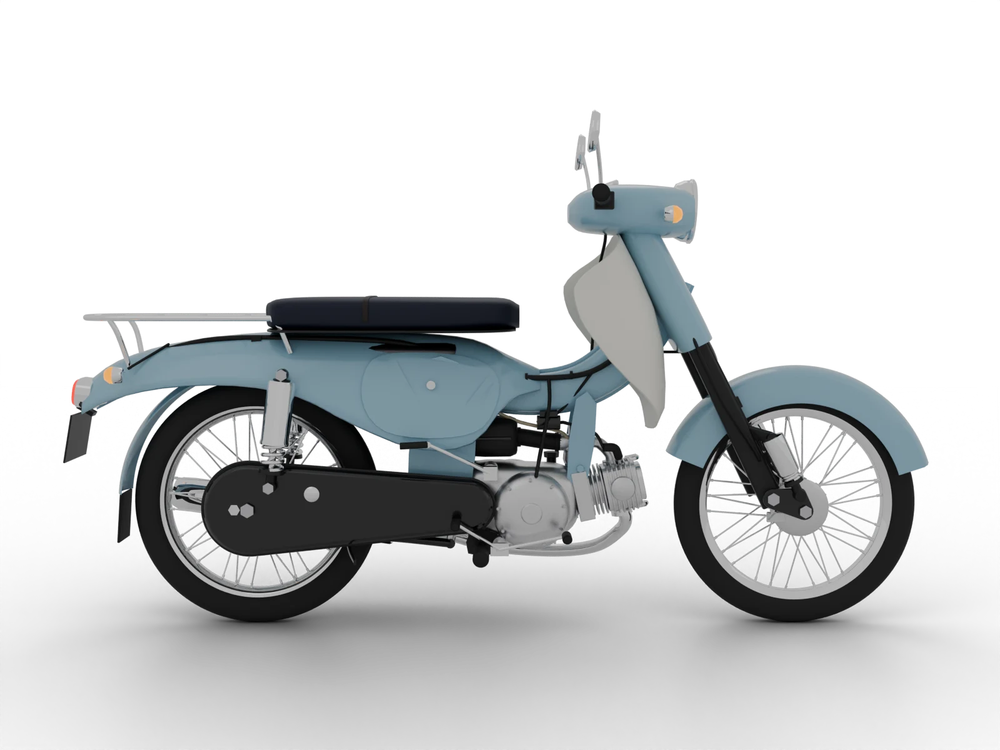

Yamaha motorcycle repairs and problems
55 Yamaha models with their key numbers, top repairs and the problems to check. Pick your bike.
 Yamaha MT-03Street · 321 ccYamaha MT-07Street · 689 ccYamaha MT-09Street · 847 ccYamaha MT-10Street · 998 ccYamaha MT-125Street · 124.7 ccYamaha XSR125Street · 124 ccYamaha XSR155Street · 155 ccYamaha XSR700Street · 689 ccYamaha XSR900Street · 890 ccYamaha FZ1Street · 998 ccYamaha FZ6Street · 599 ccYamaha FZ8Street
Yamaha MT-03Street · 321 ccYamaha MT-07Street · 689 ccYamaha MT-09Street · 847 ccYamaha MT-10Street · 998 ccYamaha MT-125Street · 124.7 ccYamaha XSR125Street · 124 ccYamaha XSR155Street · 155 ccYamaha XSR700Street · 689 ccYamaha XSR900Street · 890 ccYamaha FZ1Street · 998 ccYamaha FZ6Street · 599 ccYamaha FZ8Street Yamaha YBR125Commuter · 124 ccYamaha YS125Commuter · 125 ccYamaha YB125CommuterYamaha FZ-S FICommuter · 149 ccYamaha FZ-XCommuter · 149 ccYamaha SalutoCommuter · 125 cc
Yamaha YBR125Commuter · 124 ccYamaha YS125Commuter · 125 ccYamaha YB125CommuterYamaha FZ-S FICommuter · 149 ccYamaha FZ-XCommuter · 149 ccYamaha SalutoCommuter · 125 cc Yamaha YZF-R1Sport · 998 ccYamaha YZF-R3Sport · 321 ccYamaha YZF-R6SportYamaha YZF-R7Sport · 689 ccYamaha YZF-R15Sport · 155 ccYamaha YZF-R25Sport · 250 ccYamaha Tenere 700Adventure · 689 ccYamaha XT1200AdventureYamaha XT660AdventureYamaha XT600Adventure · 595 ccYamaha XT250Adventure · 249 ccYamaha XT125AdventureYamaha WR125AdventureYamaha WR250RAdventure · 250 ccYamaha WR450FAdventure · 450 ccYamaha FJR1300Touring · 1298 ccYamaha TDM850TouringYamaha TDM900Touring · 897 ccYamaha Tracer 700Touring · 689 cc
Yamaha YZF-R1Sport · 998 ccYamaha YZF-R3Sport · 321 ccYamaha YZF-R6SportYamaha YZF-R7Sport · 689 ccYamaha YZF-R15Sport · 155 ccYamaha YZF-R25Sport · 250 ccYamaha Tenere 700Adventure · 689 ccYamaha XT1200AdventureYamaha XT660AdventureYamaha XT600Adventure · 595 ccYamaha XT250Adventure · 249 ccYamaha XT125AdventureYamaha WR125AdventureYamaha WR250RAdventure · 250 ccYamaha WR450FAdventure · 450 ccYamaha FJR1300Touring · 1298 ccYamaha TDM850TouringYamaha TDM900Touring · 897 ccYamaha Tracer 700Touring · 689 cc Yamaha XV250Cruiser · 249 ccYamaha XV535Cruiser · 535 ccYamaha XV750Cruiser · 748 ccYamaha XV1100Cruiser · 1063 ccYamaha XVS650Cruiser · 649 ccYamaha XVS950Cruiser · 942 cc
Yamaha XV250Cruiser · 249 ccYamaha XV535Cruiser · 535 ccYamaha XV750Cruiser · 748 ccYamaha XV1100Cruiser · 1063 ccYamaha XVS650Cruiser · 649 ccYamaha XVS950Cruiser · 942 cc Yamaha NMAX 125Scooter · 125 ccYamaha NMAX 155Scooter · 155 ccYamaha XMAX 125Scooter · 125 ccYamaha XMAX 300Scooter · 292 ccYamaha TMAXScooter · 562 ccYamaha Aerox 155Scooter · 155 ccYamaha MioScooter · 125 ccYamaha FazzioScooter · 125 cc
Yamaha NMAX 125Scooter · 125 ccYamaha NMAX 155Scooter · 155 ccYamaha XMAX 125Scooter · 125 ccYamaha XMAX 300Scooter · 292 ccYamaha TMAXScooter · 562 ccYamaha Aerox 155Scooter · 155 ccYamaha MioScooter · 125 ccYamaha FazzioScooter · 125 cc
Yamaha ExciterUnderbone · 155 ccYamaha FinnUnderbone · 115 ccYamaha Jupiter Z1UnderboneYamaha Jupiter MXUnderbone · 134.4 cc